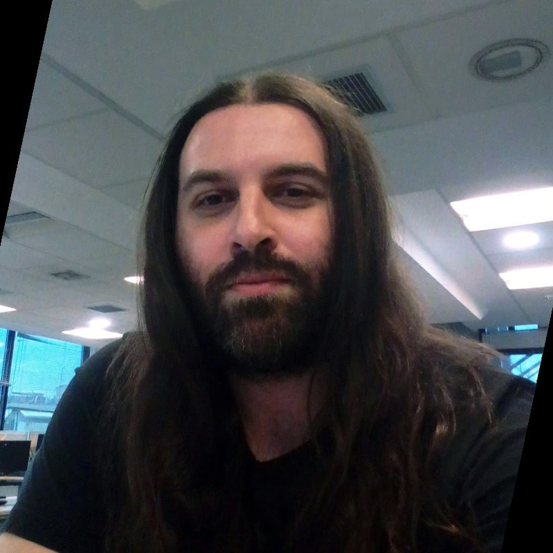

Αργύρης Κάραλης
IT Infrastructure Specialist & Systems Administrator
Βασικές ικανότητες
Download CV
Με μια ματιά

Γεια σας, είμαι ο Αργύρης Καραλής, IT Infrastructure Specialist & Systems Administrator με έδρα την Αθήνα. Με περισσότερα από 20 χρόνια εμπειρίας στον κλάδο της πληροφορικής, διαθέτω βαθιά τεχνογνωσία στη διαχείριση σύνθετων τεχνικών περιβαλλόντων και στην παροχή αξιόπιστων λύσεων.
Ως πτυχιούχος Μηχανικός Βιομηχανικής Πληροφορικής, συνδυάζω το ισχυρό ακαδημαϊκό υπόβαθρο με εκτενή πρακτική εμπειρία. Έχοντας εργαστεί σε μεγάλους παρόχους υπηρεσιών Internet & Τηλεφωνίας, εξειδικεύομαι στην επίλυση προβλημάτων προηγμένης συνδεσιμότητας (FTTH/VDSL/VoIP), IPTV και δικτυακών υπηρεσιών εταιρικού επιπέδου.
Πέρα από την εταιρική μου πορεία, δραστηριοποιούμαι για πάνω από μία δεκαετία ως ελεύθερος επαγγελματίας (Freelance IT Engineer), με εξειδίκευση στην παροχή εξατομικευμένης υποστήριξης hardware και software σε μικρές επιχειρήσεις και οικιακά γραφεία (SOHO) και στη διαχείριση του Microsoft 365. Η διαδρομή μου με έχει διαμορφώσει σε έναν ευέλικτο επαγγελματία — έναν multitasking "team player" που αποδίδει υπό πίεση και είναι πάντα έτοιμος να καθοδηγήσει άλλους ή να αντιμετωπίσει την επόμενη μεγάλη τεχνική πρόκληση.